The Terminal Application
If you use the Terminal application on a regular basis, Mac OS X Lion just became your favorite platform for showing off your UNIX prowess.
Enhanced Drag and Drop Support
In Lion, the document proxy icon in a Terminal window now represents the current directory, which is displayed to the right of the icon. This proxy functions in the same manner as proxy icons in other application windows.
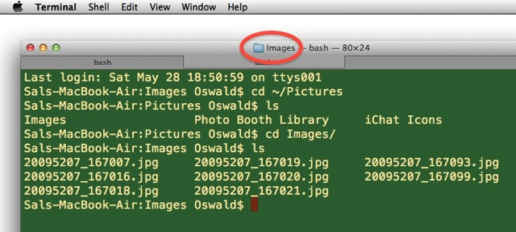
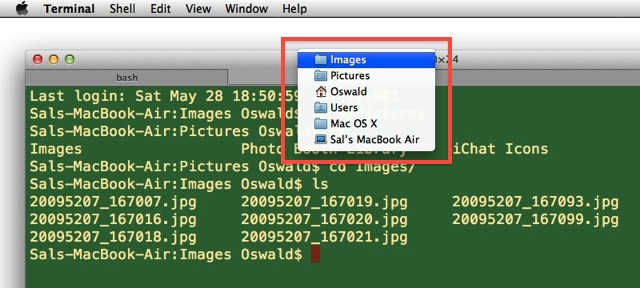
(above) In Lion, the proxy icon in a Terminal window is an alias to the current directory, whose path hierarchy can be displayed by clicking on the title bar while holding down the Command (⌘) key.
The Terminal in Lion now supports drag and drop for creating new Terminal sessions targeting specific directories.
To create a new Terminal session via drag and drop, you can:
- Drag a folder from the Finder to the Terminal icon
- Drag a folder from the Finder to the Terminal window tab bar
- Drag the Terminal window document proxy icon from the window's title bar to the tab bar in the same window, or another window
- Drag a path from a Terminal window to the tab bar
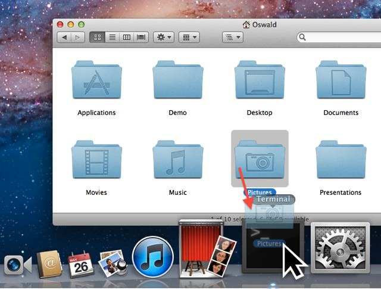
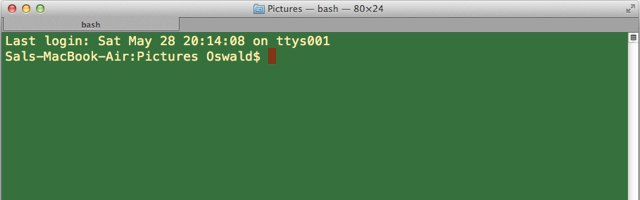
(above-top) In the Finder, drag a folder icon onto the Terminal icon to open a new Terminal session window to the dragged-on directory. (above-bottom)
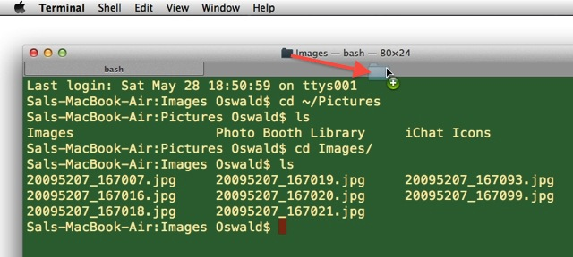
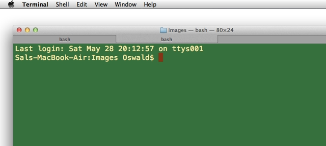
(above-top) Drag the document proxy icon to the tab bar, in the current window or another window, to create a new tab to the current directory (above-bottom). You can also drag the document proxy icon to the code within a window as well.
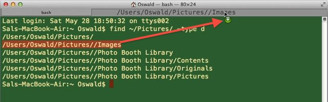
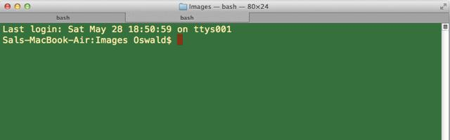
(above-top) Dragging a selected path to the tab bar to create a new Terminal session to the path. (above-bottom)
Expanded Appearance Controls
The new appearance controls include editable ANSI colors in preferences, support for 256 colors and BCE (background color erase). The default TERM value is now xterm-256color. Windows now support background images (including randomized images from folders), hidden scroll bars, and a new translucent view. And to achieve master-geek status, try the new full-screen mode (⌘-Option-F).
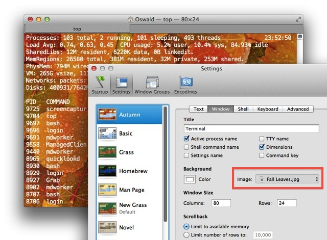
In Lion, Terminal windows can display images as their backgrounds. This is done via the image picker in the settings window properties tab. (above)
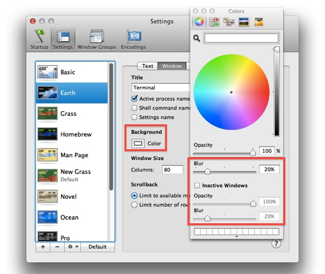
Color, blur, and opacity options are available for Terminal windows. These are accessed on the color picker palette, summoned by clicking on the color well in the (above)
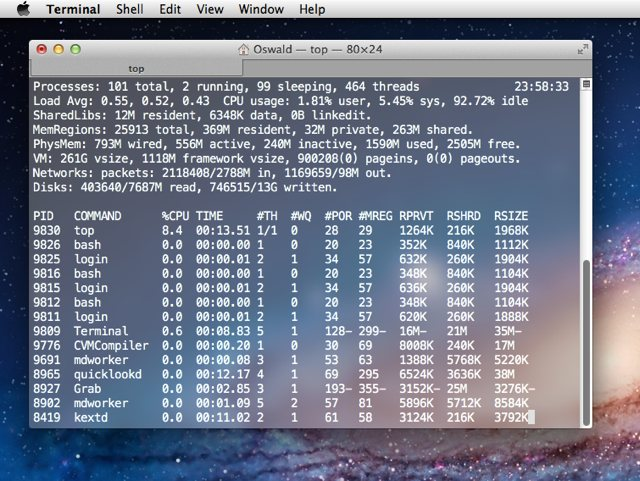
The standard Terminal window settings include a new translucent setting named Aerogel. (above)
Built-in Terminal Services
The new Terminal application in Lion contains four built-in services. By default these services are not active, and must be turned on in the Keyboard Shortcuts system preference pane.
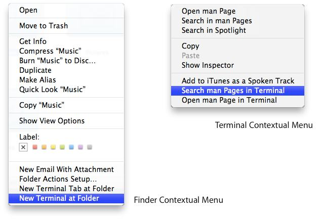
- New Terminal at Folder • This new service in Finder will open a new Terminal window cd'd to the selected folder
- New Terminal Tab at Folder • This new service in Finder will open a new tab, cd'd to the selected folder, in the current Terminal window
- Search Man Pages in Terminal • This service will use the current selection in the Terminal as a search string to find and display a list of corresponding man pages
- Open Man Pages in Terminal • This service will open a man page in Terminal for the selected termTerminal
New status controls
New status controls includes display in tabs and minimized windows; and the showing of live content, with unread text, busy, and bell count indicators.